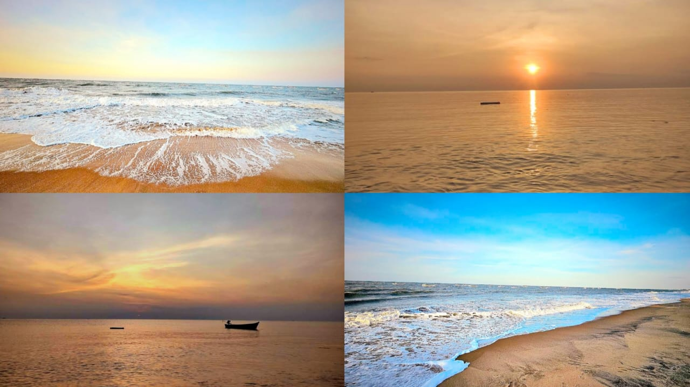

Image - The serene view of morning dawn at the Bessant Nagar beach. Captured and edited by Sakthi Akilesh
There’s a certain kind of magic that only the early morning holds - a calmness that whispers gently before the world fully wakes. At 5 a.m, while my friends were still tucked in sleep, I found myself walking barefoot on the soft sands of Bessant Nagar Beach.
The beach was alive, though calm and serene. A handful of early risers were already there - joggers moving with a steady rhythm, couples walking hand in hand, and a few elderly couples doing stretches facing towards the horizon. Each person seemed to be seeking something - peace, clarity, or maybe just the comfort of routine.
Street dogs dashed along the shore, their tails wagging, blending into the morning like familiar spirits of the sand. Some chased each other playfully while others lay twisted and curled in the sand, eyes half-closed, watching the world go by. Overhead, birds flew lines through the air, circling and gliding with effortless grace.
I sat down facing the ocean, the cool wind brushing against my hair, and pulled my knees close. The entire beach glowed slowly - at first, a pale orange streak, then golden, and finally, the full warmth of the sun climbed above the waves. It was like watching a painting come to life in slow motion. Everything sparkled - the water, the sky, even the people - touched briefly by the golden brush of morning light.
In that moment, I wasn’t thinking of anything grand. Just small things. Memories flickered in and out - reflected back on my past decisions. I realized how much life had changed, how I had changed, yet how comforting it was that the beach.
The beach didn’t ask me any questions or offer answers. It just existed, holding space for whoever showed up. And maybe that’s what made it special. As the sun rose higher and more people arrived - vendors setting up carts, laughter starting to spill into the breeze - I stood up, dusted the sand off my jeans, and took one last look.
Bessant Nagar Beach gave me something that morning - not answers, but space. A gentle reminder that life moves on, times change, but peace is always waiting if you seek it early enough.
I left with the sunlight on my face and a little more light inside me, too :)